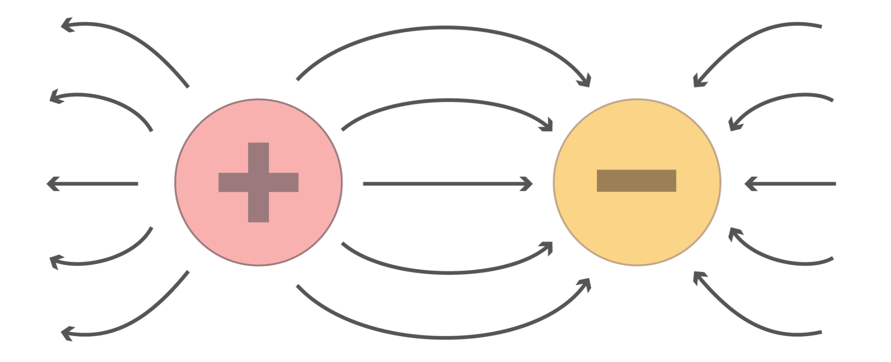
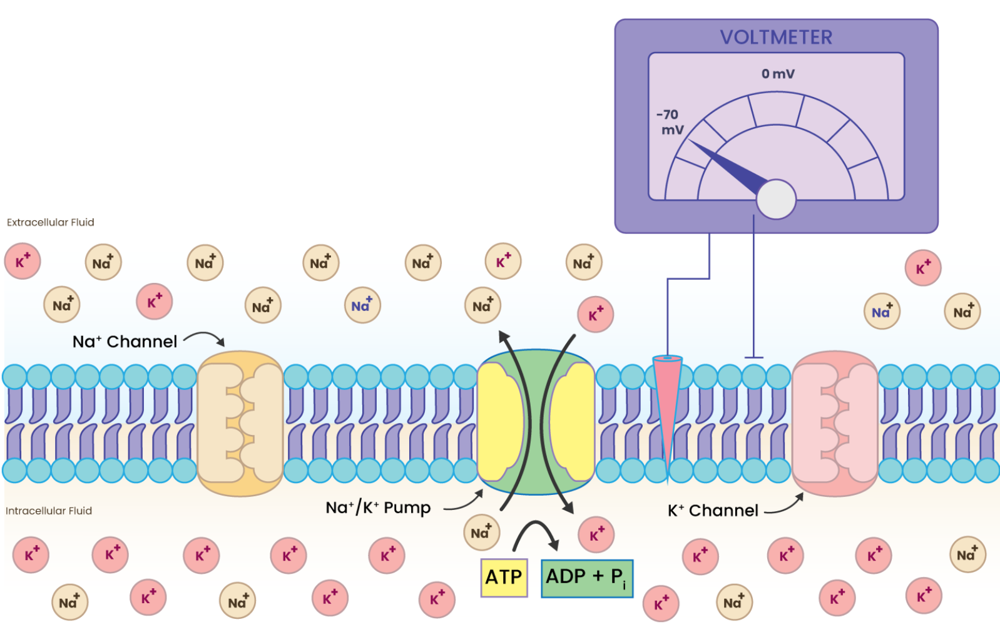
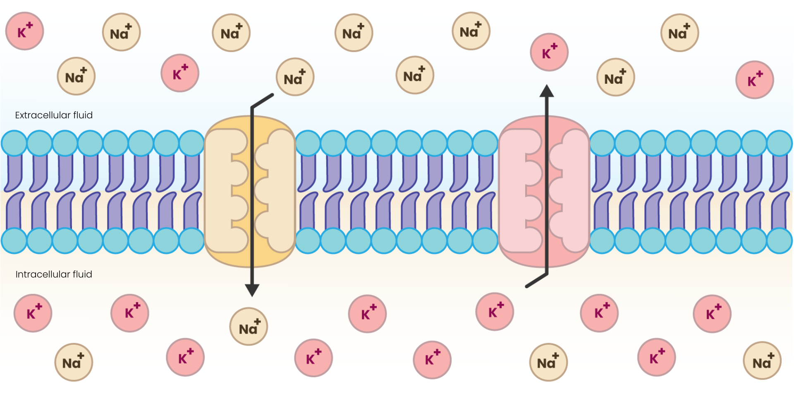
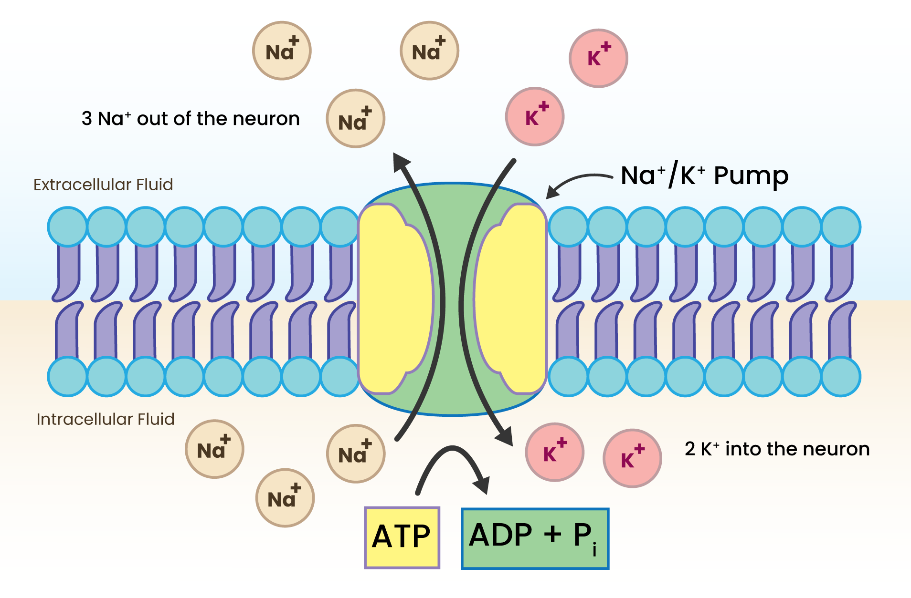

Modul 2: Memahami potensial istirahat#
Potensial istirahat neuron adalah perbedaan potensial elektrik/tegangan di seluruh membran plasma di mana neuron dalam keadaan tidak tereksitasi (yaitu, tidak mengirim atau menerima sinyal apa pun). [1] Memahami potensial istirahat sangat penting untuk memahami bagaimana neuron tetap siap menembakkan potensial aksi dan bagaimana mereka memproses dan mentransmisikan informasi. Namun, sebelum membahas topik ini, penting untuk terlebih dahulu menjelajahi sifat elektrik neuron, karena listrik adalah sarana utama di mana neuron berkomunikasi.
2.1 Dasar-dasar listrik#
Mari kita tinjau beberapa konsep dasar listrik yang akan membantu kita menjelajahi sifat elektrik neuron.
2.1.1 Arus#
Ini didefinisikan sebagai laju aliran muatan. Di neuron, ini adalah gerakan ion seperti natrium (Na+), kalium (K+), Klorida (Cl-), dan Kalsium (Ca2+) di seluruh membran, yang penting untuk menghasilkan sinyal elektrik.

Arus: Gerakan ion di seluruh membran#
2.1.2 Tegangan#
Ini adalah potensial elektrik yang mendorong aliran muatan yang ditemukan oleh Alessandro Volta pada tahun 1778. Dalam konteks neuron, tegangan mengacu pada perbedaan potensial elektrik di seluruh membran neuron, yang penting untuk menghasilkan dan mentransmisikan sinyal elektrik.

Tegangan: perbedaan potensial elektrik di seluruh membran neuron#
Untuk lebih memahami potensial elektrik, penting untuk mendefinisikan gaya elektrostatik.
2.1.3 Gaya elektrostatik#
Ini adalah gaya yang timbul karena interaksi antara objek atau partikel bermuatan. Gaya-gaya ini adalah bagian dari gaya fundamental alam dan dijelaskan oleh hukum Coulomb.

Gaya elektrostatik#
2.1.4 Hukum Coulomb#
Gaya elektrostatik (F) antara dua muatan titik (q1 dan q2) diberikan oleh:
Persamaan 1:
F = Gaya elektrostatik
k = Konstanta Coulomb (8.99×10*9 Nm*2/C*2)
q1,q2 = muatan
r = jarak antara pusat dua muatan
Info Tambahan
Hukum Coulomb pertama kali diterbitkan pada tahun 1785 oleh fisikawan Prancis Charles-Augustin de Coulomb.
2.1.5 Hukum tarik-menarik & tolak-menolak#
Gaya tarik-menarik: Jika muatan memiliki tanda berlawanan (positif dan negatif), gaya tersebut bersifat tarik-menarik.

Gaya tarik-menarik#
Gaya tolak-menolak: Jika muatan memiliki tanda sama (keduanya positif atau keduanya negatif), gaya tersebut bersifat tolak-menolak.

Gaya tolak-menolak#
2.2 Potensial Istirahat#
Potensial istirahat mengacu pada perbedaan potensial elektrik di seluruh membran neuron ketika neuron sedang istirahat. Ini terutama ditentukan oleh distribusi ion yang tidak merata, khususnya kalium (K+) dan natrium (Na+), di seluruh membran neuron. [1]

Potensial istirahat#
Note
Potensial membran adalah tegangan di seluruh membran pada saat tertentu, sedangkan potensial istirahat adalah potensial membran ketika neuron sedang istirahat (yaitu, tidak mengirim atau menerima sinyal apa pun).
- Tegangan di seluruh membran adalah pengukuran komparatif. Ahli saraf secara konsisten menggunakan luar sel sebagai titik referensi untuk mengukur tegangan di seluruh membran. Misalnya, jika bagian dalam sel 70 mV lebih negatif daripada luar, kita akan menyatakan tegangan sebagai -70 mV. [1]
Rentang tegangan potensial membran : -60 mV SAMPAI +90 mV
Tegangan potensial istirahat: Sekitar -70 mV
Potensial istirahat neuron terutama dipengaruhi oleh dua faktor utama: difusi dan gaya elektrostatik. Mari kita pahami mereka secara individual. [1]
2.2.1 Difusi [1]#
Gradien Konsentrasi Ion#
Neuron mempertahankan konsentrasi spesifik ion, khususnya natrium (Na+), kalium (K+), klorida (Cl-), dan anion organik (A⁻), di seluruh membran mereka. Biasanya, ada konsentrasi K+ yang lebih tinggi di dalam neuron dan konsentrasi Na+ yang lebih tinggi di luar.
Gerakan Ion#
Karena gradien konsentrasi, ion cenderung bergerak dari area konsentrasi lebih tinggi ke konsentrasi lebih rendah melalui saluran di membran neuron. Misalnya, ion K+ berdifusi keluar dari neuron, sementara ion Na+ cenderung berdifusi masuk ke neuron.

Difusi ion#
2.2.2 Gaya elektrostatik [1]#
Gaya elektrostatik penting dalam menciptakan potensial istirahat neuron. Ini timbul dari gerakan ion seperti kalium dan natrium, yang dipengaruhi oleh gradien konsentrasi dan gaya tarik-menolak antara partikel bermuatan. Distribusi ion yang tidak merata di seluruh membran, dikombinasikan dengan gaya elektrostatik, menghasilkan muatan negatif di dalam neuron relatif terhadap luar, yang mengarah ke potensial istirahat khas sekitar -70mV, yang penting untuk kemampuan neuron menghasilkan potensial aksi dan berkomunikasi dengan neuron lain.
2.3 Potensial kesetimbangan#
Potensial kesetimbangan (juga dikenal sebagai potensial Nernst) untuk ion spesifik adalah potensial membran di mana aliran bersih ion tersebut di seluruh membran adalah nol. Pada potensial ini, gradien konsentrasi (gaya difusif) seimbang dengan gradien elektrik (gaya elektrostatik). Ini berarti bahwa gaya elektrostatik yang menarik ion ke dalam sel seimbang persis dengan gradien konsentrasi yang mendorongnya keluar (atau sebaliknya). [1]

Potensial kesetimbangan#
Persamaan Nernst: Potensial kesetimbangan untuk ion spesifik dapat dihitung menggunakan persamaan Nernst: [2]
Di mana:
Eion adalah potensial kesetimbangan untuk ion.
R adalah konstanta gas universal.
T adalah suhu absolut dalam Kelvin.
z adalah valensi (muatan) ion.
F adalah konstanta Faraday.
Iout dan Iin adalah konsentrasi ion di luar dan di dalam sel, masing-masing.
Potensial Kesetimbangan untuk ion utama: [1]
K+: Sekitar -90 mV (ketika K+ memiliki konsentrasi intraseluler 120 mM dan ekstraseluler 4 mM)
Na+: Sekitar +60 mV (ketika Na+ memiliki konsentrasi intraseluler 14 mM dan ekstraseluler 140 mM)
2.4 Persamaan Goldman [3]#
Persamaan Goldman, sering disebut sebagai persamaan GHK, menghitung potensial istirahat sel berdasarkan permeabilitas dan konsentrasi beberapa ion. Ini memperhitungkan kontribusi relatif ion berbeda terhadap potensial istirahat. Persamaannya adalah sebagai berikut:
di mana:
Vm adalah potensial membran
R adalah konstanta gas universal
T adalah suhu absolut dalam Kelvin
F adalah konstanta Faraday
PX adalah permeabilitas ion X
Xin adalah konsentrasi ion X di dalam sel
Xout adalah konsentrasi ion X di luar sel
Note
Potensial Nernst (atau potensial kesetimbangan) menunjukkan tegangan untuk ion spesifik, tetapi karena potensial istirahat dipengaruhi oleh beberapa ion, kita menggunakan persamaan Goldman untuk menghitung potensial istirahat keseluruhan sel. [1]
2.5 Saluran ion#
Saluran ion (juga disebut filter ion atau saluran ion-selektif) adalah protein khusus di sel saraf (neuron) yang mengontrol gerakan ion di seluruh membran sel. [4] Saluran ini membantu ion tertentu - seperti natrium (Na+), kalium (K+), kalsium (Ca2+), atau klorida (Cl-) - bergerak cepat di seluruh membran berdasarkan gradien konsentrasi (yaitu, dari tinggi ke rendah konsentrasi). [5]
Ada dua jenis saluran ion utama:
Saluran Kebocoran#
Ini sebagian besar terbuka, membiarkan ion mengalir bebas berdasarkan gradien konsentrasi mereka.
Saluran Berpintu Tegangan#
Saluran ini membuka dan menutup sebagai respons terhadap perubahan potensial membran sel. Mereka penting untuk menghasilkan dan mentransmisikan sinyal elektrik, seperti potensial aksi.
Saluran ion sangat selektif, yang berarti mereka hanya membiarkan ion tertentu melewati sambil memblokir yang lain. Misalnya, saluran kalium memungkinkan hanya ion kalium (K+) melewati sambil memblokir semua ion lainnya. Demikian pula, saluran natrium memungkinkan hanya ion natrium melewati sambil memblokir semua ion lainnya.
Bagaimana cara kerjanya?#
Anda mungkin berpikir bahwa saluran ion bisa memblokir semua ion positif dengan menambahkan muatan positif ke pembukaannya, tetapi ini tidak akan berhasil karena baik K+ dan Na+ bermuatan positif. Sebaliknya, saluran ion ini memilih ion berdasarkan ukuran mereka. Ion natrium lebih kecil (116 pikometer), sedangkan ion kalium sedikit lebih besar (152 pikometer). Masih, natrium bisa melewati saluran ion natrium dan bukan saluran kalium.
Apa yang bisa menjadi alasan? Mari kita lihat.
Di neuron, ion natrium (Na+) dan kalium (K+) dikelilingi oleh “cangkang hidrasi,” yang mengacu pada struktur molekul air yang diatur di sekitar setiap ion karena interaksi elektrostatik. Cangkang hidrasi untuk ion natrium lebih kuat daripada ion kalium karena kepadatan muatan tinggi mereka (yaitu, muatan per unit area).
Apa yang terjadi ketika keduanya mencoba melewati saluran ion natrium? [6]
Susunan asam amino di saluran ion natrium lebih menyukai lintasan ion natrium tetapi bukan ion kalium . Ketika kedua ion datang untuk melewati saluran ion bersama dengan cangkang hidrasi mereka, susunan asam amino di saluran ion natrium menolak dan menghilangkan ion natrium dari cangkang hidrasinya tetapi tidak dapat menghilangkan ion kalium dari cangkang hidrasinya. Itulah sebabnya ion natrium hanya melewati saluran ion natrium.
Demikian pula ion kalium hanya melewati saluran ion kalium.
2.6 Pompa natrium kalium#
Pompa natrium-kalium (Na+/K+ ATPase) adalah protein membran penting yang membantu mempertahankan keseimbangan yang tepat ion natrium (Na+) dan kalium (K+) di seluruh membran sel, khususnya di neuron. [7]
Ini bertanggung jawab atas transport aktif ion Na+ dan K+, yang penting untuk mempertahankan potensial istirahat. Ini adalah proses yang bergantung pada energi, dan pompa natrium-kalium menggunakan energi yang dihasilkan dari hidrolisis ATP menjadi ADP + Pi untuk memindahkan ion Na+ dan K+ melawan gradien konsentrasi alami mereka (yaitu, dari tinggi ke rendah konsentrasi). [8]
di mana:
ATP adalah Adenosin trifosfat
ADP adalah Adenosin difosfat
Pi adalah ion fosfat
Note
Transport Aktif adalah proses yang melibatkan gerakan molekul dari wilayah konsentrasi lebih rendah ke area konsentrasi lebih tinggi melawan gradien konsentrasi alami mereka. [9]
Fungsi Pompa Natrium-Kalium#
Biasanya ada konsentrasi natrium yang lebih tinggi di luar sel dan konsentrasi ion kalium yang lebih tinggi di dalam sel.
Dengan setiap siklus, pompa natrium-kalium memindahkan 3 ion Na+ keluar dari neuron dan 2 ion K+ masuk ke neuron. Ini menghasilkan ekspor bersih muatan positif dari neuron, berkontribusi pada potensial membran istirahat negatif. [7]

Pompa Natrium-Kalium#
Note
Pompa membantu mempertahankan gradien elektrokimia penting untuk potensial istirahat, biasanya sekitar -70 mV di neuron. Gradien ini penting untuk generasi potensial aksi. [10]
Potensial aksi adalah perubahan cepat, sementara potensial elektrik di seluruh membran neuron yang memungkinkannya mentransmisikan sinyal sepanjang aksonnya. Ini adalah mekanisme fundamental di mana neuron berkomunikasi satu sama lain dan sel lain.
Fakta Menarik
Pompa natrium-kalium mengkonsumsi sekitar 70% (2/3) energi sel saraf. [11]
2.7 Ringkasan#
Dalam modul ini, kita belajar bagaimana neuron mempertahankan keadaan elektrik stabil yang disebut potensial istirahat (sekitar ~70 mV). Kita meninjau konsep elektrik penting - arus, tegangan, gaya elektrostatik, dan hukum Coulomb - untuk memahami bagaimana ion mendorong tegangan membran. Kita menjelajahi bagaimana difusi dan gaya elektrostatik bersama-sama menetapkan potensial membran, dan belajar bagaimana ion individu memiliki potensial kesetimbangan mereka sendiri (melalui persamaan Nernst). Kita juga mempelajari persamaan Goldman (GHK), yang menghitung potensial istirahat keseluruhan berdasarkan permeabilitas ion. Kita memeriksa saluran ion, selektivitas mereka, dan bagaimana saluran kebocoran mempertahankan potensial istirahat, bersama dengan peran penting pompa natrium-kalium, yang menggunakan ATP untuk melestarikan gradien ion dengan memompa 3 Na⁺ keluar dan 2 K⁺ masuk. Modul ini membentuk fondasi elektrik yang diperlukan untuk memahami:
Sifat membran pasif (Modul 3), yang menentukan bagaimana sinyal menyebar sepanjang neuron, dan
Potensial aksi (Modul 4), yang merupakan lonjakan cepat yang digunakan untuk komunikasi jarak jauh.